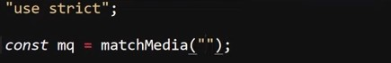
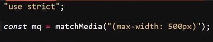
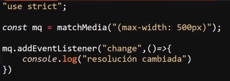

MatchMedia( )
Esta api permitr trabajar con responsive dising, sin embargo lo más recomendable es limitar su empleación unicamete para aquellos casos en los que se requieran realizar ciartas acciones que no puedan ser cubiertos por CSS, por ejemplo cambiar clases, modificar propiedades, es decir cambios en los estilos de la paguina, es decir esta api permite trabajar con media querys de una forma diferente a la que permite CSS pero no debe ser usado para definir los estilos de la paguina, unicamente se recomeida usar para añadir interactividad a la paguina.
Esta api consiste en el uso del metodo ""matchMedia(), una particularidad de este es que para su funcionamiento se necesita ubicar comillas ("") dentro de los parentesis de este metodo, este es un detalle clave para el funcionamiento del metodo.
Ejemplo

Por otra parte para el uso de este metodo tambien es necesario el ingresar los "media query" entre parentesis, este es otro detalle importante, ya que de lo contrario media no sera reconocido, por lo tanto tanto las comillas como los parentesis dentro de estas son esenciales para el funcionamiento del metodo a la hora de definir los medias dentro de este.
Ejemplo

La función de "matchMedia" se podira resumir de que esta valida si se cumple la media que se defina en su interior, de hecho al utilizar el metodo ".matches" se retorna un valor boolenao que define si esta se cumple o no, de ese modo una alternativa es utilizar un escucha de eventos para el envento "change", el cual en este caso se dispara cada vez que la propiedad ".matches" cambie su valor.
Ejemplo

De este modo en el ejemplo cada vez que el valor definido en el metodo ".matches" cambie de valor(true, false) se dispara el mesaje en consola, y de ese modo se puede utilizar el ".matMedia" para realizar una acción en caso de que las dimenciones de la pantalla cumplan con una condición en concreto.